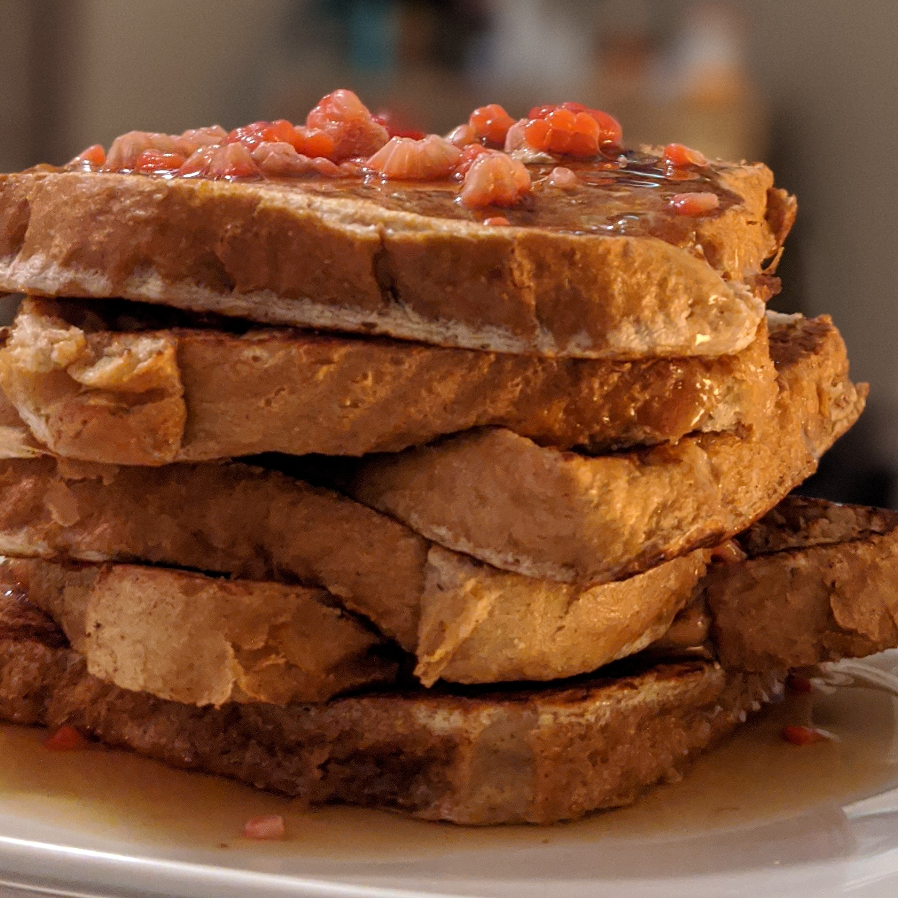

French Toast

Anabolic French Toast is a Chef Greg staple!
Enjoy this delicious high protein version of a North American classic breakfast.
It is recommended to pair the anabolic french toast with fresh fruit or your favorite
low-calorie syrup (such as Walden Farms).
Makes 2 servings | Prep Time: 5 min. | Cook Time: 10 Min. | Ready in: 15 min
Ingredients
- 1 cup egg whites
- 4 slices regular ass white bread (up to 80 calories per slice)
- 1 packet sweetener
- 1 tsp cinnamon
- 1 tbsp vanilla extract
- 0.5 cup blueberries
- 0.5 cup low calorie syrup
- Cooking spray
Directions
- In a bowl, add egg whites, sweetener,
cinnamon, and vanilla extract. Whisk
until spices are evenly distributed throughout the mixture.
- Heat a griddle over low-medium heat. Spray griddle with cooking spray.
- Dip bread slices into egg white mixture, and transfer to pan.
- Spoon any leftover egg white mixture into the bread in the pan.
If done slowly, the bread should absorb the mixture and get fluffy.
- Let cook for about 3-4 minutes on each side.
- Remove French toast from the pan and serve on a plate with toppings. Suggestions for
toppings are blueberries and low calorie syrup. (NOTE: toppings are NOT included in
the estimated nutritional values).